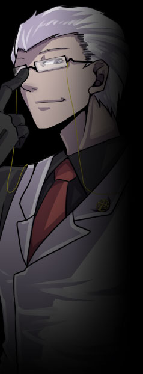

▼政府機関【 グングニル 】
上層、そしてユグドラシル全土を束ねる政府機関。イメージワードは【統治】。
島全体の運営と治安維持、そして異能者研究を主要な目的とする。
セントラルタワー【フリズスキャルブ】を拠点とし、
政府機関だけあってユグドラシル全域に影響力を持つが、 公式サイト原文
ユグドラシルの統治機関。
セントラルタワー【 フリズスキャルブ 】を拠点とし、
生産プラント【 ヴァナヘイム 】や
なお、流通・商業といった管轄はルーン企業連が大きく担っており、 |
|
 |
アレク・ハールバルズ
|
||||||||||||||
|
ユグドラシル総督にしてグングニル室長。
褐色の肌に銀髪の欧州系。
表向きは紳士的かつ穏やかな態度を崩さず、市民の支持も高い。
島内ではごく少数の者しか与り知らぬ事実ではあるが、 余談だが、一部で「カカオ」のあだ名で揶揄されている。
「人には役割がある。私より有能な者がいるなら、その者がやればいい」 公式サイト原文
アレク＝ハールバルズ
グングニル室長。ユグドラシル最高権力者。
表向きは穏やかであり、市民の支持も高い。
自身すらも駒の１つと考え、その知略でラグナロク事件をも制した切れ者。
「人には役割がある。私より有能な者がいれば、その者がやればいい。」 |
|||||||||||||||